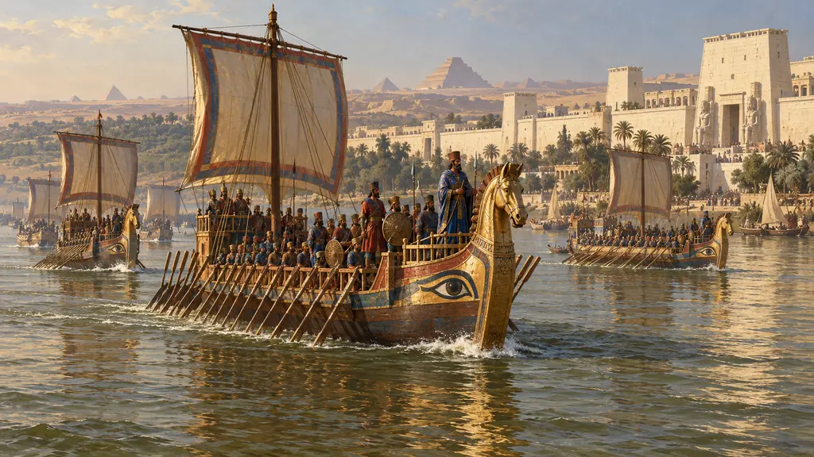
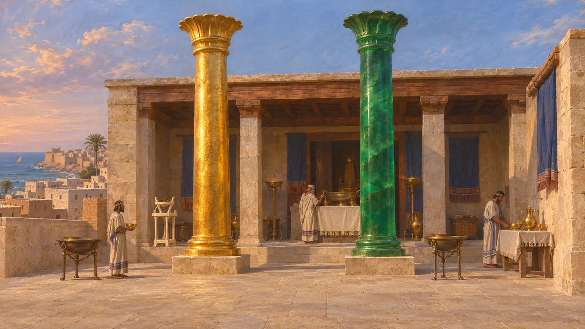
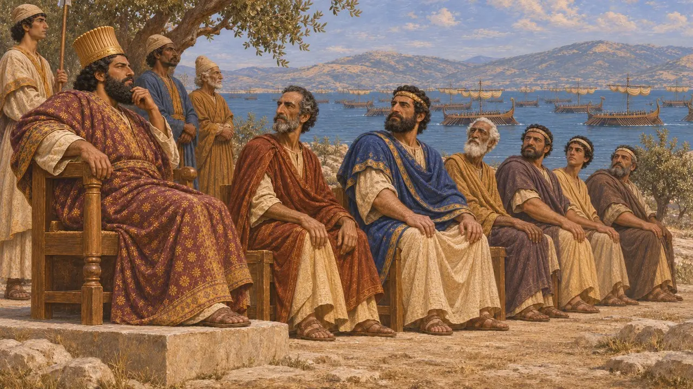
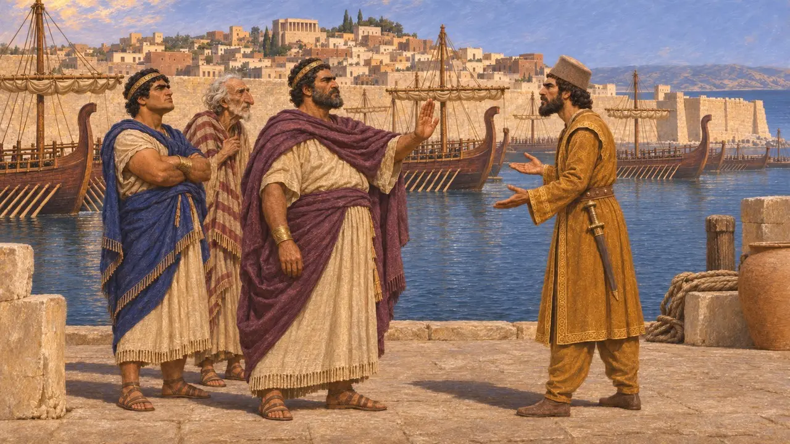
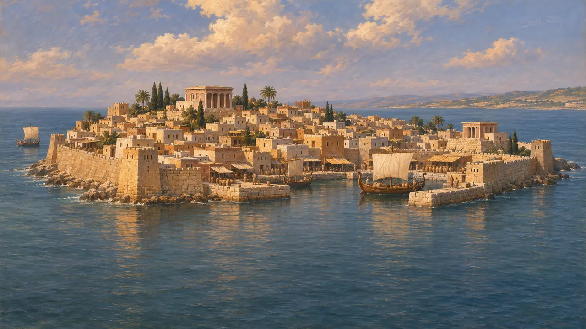

صور
شهر جزیرهای فنیقی، مادر کارتاژ، دوم در ناوگان شاه، سدههای ششم و پنجم پ.م.
صور شهری فنیقی بود بر جزیرهای روبهروی کرانهٔ لبنان. کارتاژ را بنیاد نهاد و به رنگ ارغوانی و پرستشگاه ملقارت، که یونانیان هراکلس میخواندندش، نامور بود. در دوران پارس، شاه آن پس از شاه صیدا در شورای جنگی خشایارشا در جایگاه دوم مینشست.
در بازی: صور همراه صیدا در یادداشتهای مربوط به فنیقیان و در گفتوگوهای ملوانان و بازرگانان آمده است.

پرستشگاه هراکلس
روایت باستانیهرودوت میگوید برای آگاهی از هراکلس با کشتی به صور رفت و پرستشگاهی پرشکوه با دو ستون دید، یکی از زر ناب و دیگری از سنگ زمرد که شبها میدرخشید. کاهنان به او گفتند که پرستشگاه همراه شهر، ۲۳۰۰ سال پیش، بنیاد شده است.
Herodotus 2.44



شهر جزیرهای
در اسنادصور بر جزیرهای بود تا آنکه اسکندر در محاصرهٔ ۳۳۲ آببندی تا آن ساخت، که آریان وصفش کرده است. انباشت شن کنار آن آببند از آن پس شهر را به خشکی پیوسته است. سکههای صور در اواخر سدهٔ پنجم دلفینی و صدف موریکس را نشان میدهند.
Arrian, Anabasis 2.16-24
منابع
- Herodotus 2.44, 3.19, 7.98, 8.67
- Arrian, Anabasis 2.16-24